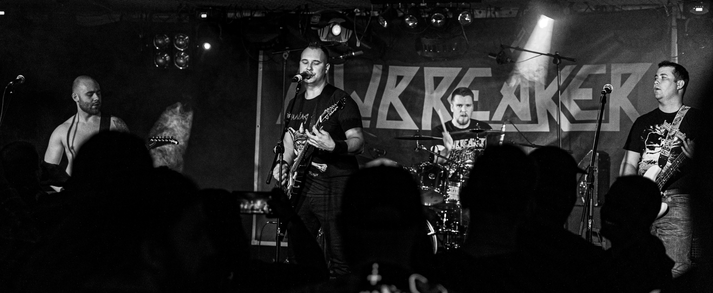

BANDPORTRAIT · 15. NOVEMBER 2026
Lawbreaker – Dirty Rock N' Roll aus Liechtenstein
Harte Gitarrenriffs, treibende Drums und jede Menge Heavy Metal! Seit 2014 verbindet Lawbreaker klassischen 80er-Metal mit Blues und gutem alten Rock N' Roll.

Dirty Rock N' Roll seit 2014
Lawbreaker wurde im März 2014 von Mikk Van Shredder und Jonas Gantenbein in Schellenberg gegründet. Die beiden Musiker standen bereits Jahre zuvor gemeinsam auf der Bühne und wollten mit Lawbreaker ihre Leidenschaft für klassischen Heavy Metal weiterleben.
Inspiriert von Legenden wie Judas Priest, Iron Maiden, Saxon und Motörhead verbindet die Band den Sound der 80er-Jahre mit einer ordentlichen Portion Blues und Rock N' Roll.
Harte Riffs und jede Menge Energie
Wadenbeissende Gitarrenriffs, markante Vocals, treibende Drums und epische Refrains zum Mitsingen: Das ist der unverwechselbare Sound von Lawbreaker.
Von Beginn an stand das Schreiben eigener Songs im Mittelpunkt. Mit kraftvollen Melodien und jeder Menge Leidenschaft entwickelte die Band ihren ganz eigenen Stil, den sie schlicht Dirty Rock N' Roll nennt.
Die Gesichter hinter Lawbreaker

MIKK VAN SHREDDER
VOCALS & GUITAR

CHRISTOPH SELE
BASS

ANDREAS KARL
GUITAR

RUBEN KAUFMANN
DRUMS
Lawbreaker live erleben
Seit ihrem ersten Konzert im Oktober 2017 haben sich Lawbreaker mit zahlreichen energiegeladenen Live-Auftritten einen Namen in der regionalen Metal-Szene gemacht.
Zu den Highlights gehören Auftritte am Open Hair Metal Festival, bei Nucular Strike, der Malbuner Metal-Night sowie ein Support-Auftritt für die US-Band Killer Kin im September 2026.
Auch beim ersten Bandfestival des Vereins Musikszene e. V. im Oktober 2026 war Lawbreaker mit dabei.
Die erste EP ist in Arbeit
Nach mehr als einem Jahrzehnt voller Heavy Metal steht für Lawbreaker der nächste grosse Meilenstein bevor: Die Band arbeitet derzeit an ihrer ersten offiziellen EP mit vier eigenen Songs.
Die Veröffentlichung ist für das Frühjahr 2027 geplant. Fans dürfen sich auf kraftvolle Gitarrenriffs, eingängige Melodien und jede Menge Dirty Rock N' Roll freuen.
Mehr von Lawbreaker
Du möchtest mehr über die Band erfahren oder wissen, wann sie das nächste Mal auf der Bühne steht?